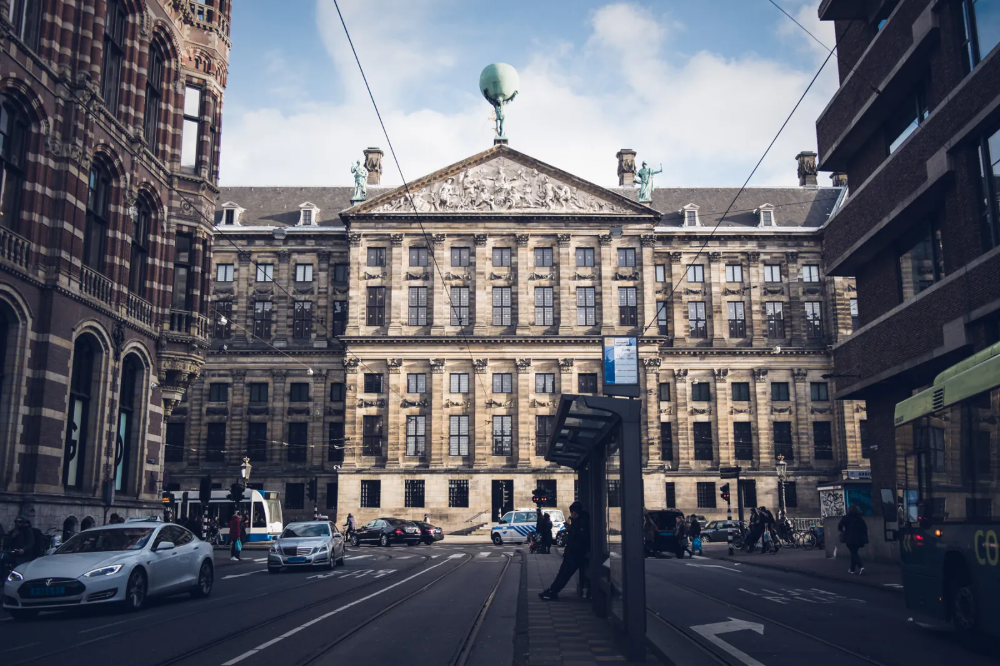
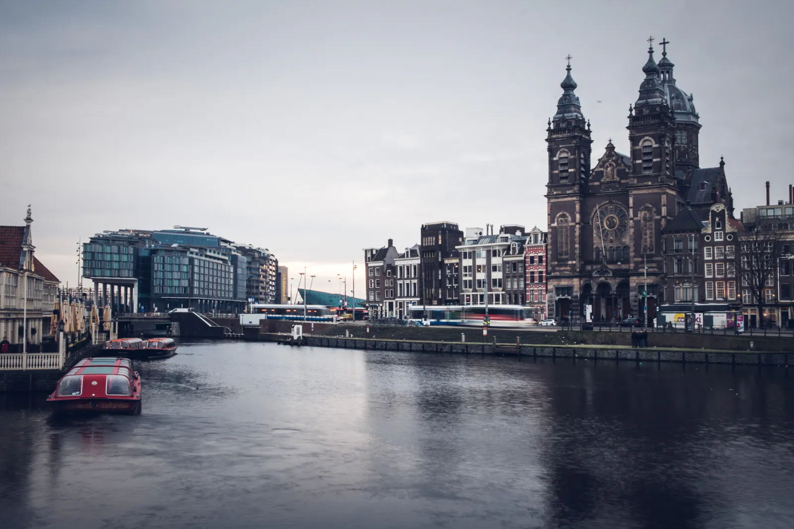
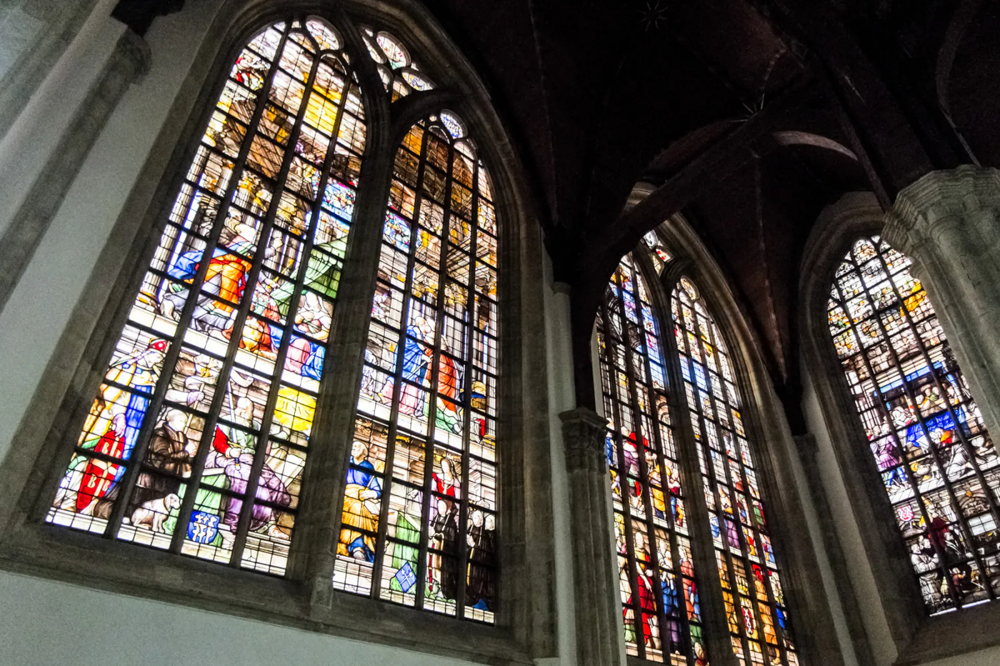

Sins and Pleasures
The direct flight from Houston was very lengthy at 12 hours. Upon landing, I spent a couple hours at the airport getting my bearings, exchanging currency, getting a map, and finding a bus. Around noon, I boarded the bus that would take me to city center. The streets became increasingly narrow as we approached city center. Bikes littered across every possible railing or pole you might be able to wrap a chain around. Cruises and residential boats flowed down the canal system that interweaved the city. The buildings that tightly flanked every street and canal all share a common yet individualized architecture. The shallow foundations paired with sediment settling made it so that each building is slightly crooked at an unique angle under its own weight. Every bridge, house, and sidewalk in the city is filled with hundreds of years of history. A sense of excited uncertainty started to burn within me as I looked out of the bus window, and I have yet to step out into that world!
My first few hours in the city were spent simply walking around meaninglessly. I literally got lost in the city, knowing that all I need to find my way was a wifi hotspot thanks to the convenience of modern technology. Nevertheless, there is a great disconnection from the lack of data on my American phone, which only helps with “getting lost”. I couldn’t wipe that silly smile off my face as I walked along the beautiful canals of the city. Each of them man-made hundreds of years ago by carving out marshlands and lining the sides with bricks and concrete. Eventually I found an inviting coffee house that served fresh deli sandwiches alongside some of the finest bud in the world. My excitement could not be contained.

The atmosphere in coffee shops is scarcely comparable to bars. It was a much more relaxed, socially conductive environment. There was not abnoxiously loud music playing over conversations, no disorderly conduct, no people knocking into each other, no isolated island tables and booths. Instead, most coffee bars had long tables and open lounges that encouraged intermingling. Cannabis did not make anyone belligerent or cumbersome, only much more sociable and prone to humour. It felt like an international gathering for people who liked to roll some J's more than drinking beers. I met folks from nearly every contient on my first night!
I was up by 6. I don’t know why, I had no alarm. It just happened. I guess it must’ve been the time zone difference and jet lag; nevertheless, I got up, showered and took care of daily hygiene (none of which have been addressed for a couple days). My roommates were still deep asleep, so I decided to go downstairs to wait for breakfast and plan my day out. Breakfast was very simple, with nothing warm or cooked, but I can’t complain for 9 euros a night. The 30 minute commute to Central Station felt much faster, for I was so entertained by observing the busy locals on their morning routine. It was fascinating: they mostly rode bikes for transportation, although public transport was certainly a popular second. Some stopped at a local cafe to pick up some pastries and coffee. Others stopped at open markets to grab a fresh sandwich. So many faces and people interacting with each other… what a dramatic difference from Houston, where we encase ourselves in our metal and tinted glass shells and race to work without ever establishing eye contact with another being.
By the time I got downtown, most shops weren’t open yet. I signed up for a boat tour and learned a tremendous amount about the city’s canals and history. There were only a handful of passengers on the boat, so it felt almost like a private charter tour. After the tour, I started my first long walk around town. It’s hard to navigate a city without knowing a scale of distance, major streets, and locations of large landmarks. I grabbed a traditional raw herring sandwich as I walked by an open-air market with many local farmers, fishermen, and gardeners selling their products. Amsterdam is known for its beautiful flowers, and the flowers did not disappoint. The fresh, natural fragrance of the flower shops was tangibly sweet.

I spent that afternoon exploring a couple of churches in Amsterdam: it’s oldest standing cathedral and a hidden house-church. The cathedral made a strong impression on me. The electrical and artificial lighting on the interior have been completely removed for the exposition. Consequently, the interior was only lit by natural light coming from its gorgeous, large windows, a feature of gothic architecture it helped pioneer. The uneven stone flooring and handmade furnishings of the church gave it a beautiful imperfection that isn’t common today. There were very few visitors and all visitors were as quiet as mice. I sat down on one of its five hundred year old pews and looked to the massive organ and vaulted ceilings. The moment was so serene and peaceful. I closed my eyes and took some time to let my mind ponder the possibility of divine existence and the purpose of life.
The next Church I visited was just about the polar opposite in design as the Cathedral. It was a hidden catholic church in a house attic made during a time when Catholics had to worship in secret. What it lacked in self-promoting grandeur was made up by its surprisingly complete functionality. Every square foot of the church was used with intention and any pastor would find it suite of features and rooms impressive. The worship room, which is the “main attraction” of the church, is a lavishly decorated, impressively large room made by sawing through the top three stories of the house. Looking from the outside, nobody could imagine such a large room could fit in such a small house. The only thing missing from the church was a bell.
I arrived at the Rembrandt Museum at 6:30 pm. The receptionist suggested that I come back tomorrow, because 30 minutes really isn’t enough to see everything. So I walked across the street to Bluebird Coffee House. Although it was raining, it felt nice outside with my coat on. There were only two tables outside and one was occupied by a couple. The other was occupied by a fellow in a thick blazer and voluminous scarves patiently reading a book. I kindly asked him if he would mind if I joined him, and he gave a warm, welcoming “Of course, friend”. I thanked him and left my bag and coat outside with him while I went inside to buy some bud and roll some joints. I joined him outside about ten minutes later and we started talking as if we were old friends.
His name is David, just like mine. What a coincidence, right? I learned that he was a fellow traveler, who calls London home. He studies acting and theater and hopes to run his own shows later. He is a passionate reader who always carries a book with him. He recommended to me one of his favorite bookstores, a small shop a hundred feet to the east of the Rembrandt museum. We exchanged laughs and stories, discussed art and traveling, shared joints after joints. The cold eventually settled in after sitting motionless for a couple hours. We decided to move inside, where I met a fellow I call “Chris” (he has a really complicated French name that has “chris” somewhere in there) and his girlfriend Mary. They were French travelers on a tour of Europe. They loved and studied film, and gave credit for their fine english to watching films. Their english wasn’t perfect, however. David happened to know some French as well, and we conversed in what was perhaps the most fluid mixture of both languages I’ve ever experienced.

We parted ways after ten. We embraced each other and we exchanged emails and facebooks. Chris and Mary left first, then I walked a while with David before we had to part ways. “Brother, come here!”, a warm embrace, “I’ll write you”. Then he was gone. Isn’t it beautiful? How many amazing, inspiring, wise, talented, friendly, amiable people are out there, waiting to be befriended. How the only thing that brings us to meet them is the sheer coincidence of being at the same place at the same time. I headed to my hostel to conclude my day, but little did I know it wasn’t remotely over.
That night I met another one of my roommates. He was a a civil engineering student from Argentina who barely spoke a drop of english, although he could understand basic words. That did not stop us from being friends. Meeting him gave me the realization that language is nothing but a barrier in the ways we communicate with each other. Am I to simply accept the condition of disqualifying half the people on this planet because they don’t speak a language I understand? NO! We talked for while in the room. Conversations were slow but flowed flawlessly. Since we were in Amsterdam after all, we eventually rolled a couple of joints to enjoy in the hostel’s courtyard. We smoked, told stories, and shared a genuine interest in getting to know each other. He was to leave the hostel for the airport at 5 the next morning for his flight to Spain, so we cut the night short and went to sleep by one.
The next day I spent the whole morning exploring city center. By now, I had a general sense of direction around the city and wasn’t in a perpetual state of being lost. I stopped by many shops and boutiques to see the unique products inside. Around red light district, it seemed like a lawless utopia where sinful pleasures married capitalism. I’ve never seen such high tolerance for bad behavior. Some shops sold drugs from MDMA to shrooms and all colors in between. Others sold sex toys and condoms of richer variety than I could ever imagine. Brothels lined the street with prostitutes of every shape and color alluring men who come close to their red-lit window. Everything was very reasonably priced too, thanks to the free market and competition of course. Drug and sex was normalized, and it definitely felt anything but normal. Nevertheless, Amsterdam has gained from this system. Sexual assault and drug overdose rates are impressively low. In case you were wondering: the only things I bought during my visit was some mushrooms, weed, and cannabis seeds… no sex haha!